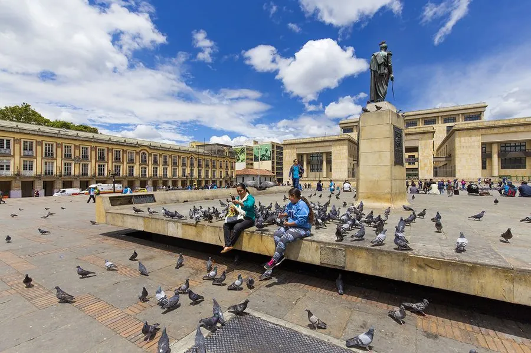

Bogotá · Colombia
La Candelaria is de oudste wijk van Bogotá — een levendig labyrint van koloniale gebouwen, kleurrijke gevels, lokale cantines en legale straatkunst van wereldklasse. Hier sloeg Gonzalo Jiménez de Quesada in 1538 zijn kamp op en stichtte de stad.
Vandaag is de wijk het culturele hart van Bogotá: het Museo del Oro, de Plaza de Bolívar, de kathedraal, het Teatro Colón, de Plazoleta del Chorro de Quevedo en tientallen kleine musea en galeries liggen allemaal op wandelafstand van elkaar. De straatkunst — legaal en vaak politiek — maakt van de wijk zelf een openluchtmuseum.

The city’s cultural epicenter is La Candelaria, the historic downtown quarter toward which most travelers gravitate. Here, an assortment of preserved colonial buildings are punctuated with newer neoclassical and art-deco styles. This area has Bogotá’s highest concentration of museums, restaurants, hotels, and bars dotted amid 300-year-old houses, churches and convents. The sentinel Eastern Hills, dominated by the church-topped Cerro de Monserrate, provide a welcome green backdrop. The city’s grittier sides sit south and southwest of La Candelaria, where working-class barrios, not yet tourist magnets, have shrugged off the no-go reputations of yesteryear. Skyscrapers crowd the Centro Internacional’s business district, while streets to the north have boutique hotels and fashionably clad locals perusing chic entertainment in the Zona Rosa. Here, rust-tinted sunsets bounce off the terracotta bricks of Bogotá’s Andes-hugging residential towers – a cinematic ceremony that ushers in the city’s uproarious evenings. La Candelaria
Get orientated in the Plaza de Bolívar where the city is thought to have been founded in 1538. You’ll be naturally drawn to the neoclassical facade of the gigantic Catedral Primada, but also reserve time for the Capitolio Nacional and the Casa de Nariño that sits behind it. Afternoon
Grab lunch in La Puerta Falsa and stroll up La Séptima, spending the best part of the afternoon in the extraordinary Museo del Oro. Evening
Pass the evening admiring creative street art and dipping into the bars around the Plazoleta del Chorro de Quevedo. Be sure to decamp to Origen Bistro for dinner.
The city’s oldest neighbourhood, La Candelaria, lies at what was once the junction of two rivers, the Río San Agustín (which now runs under Calle 7), and the Río San Francisco, which still flows through the centre of town to this day, in a channel down Avenida Jiménez. La Candelaria is home to some of South America’s most impressive colonial buildings, and is the neighbourhood where most tourists – and certainly most backpackers – choose to stay. The downtown city centre, though more modern than La Candelaria, gives the impression of having gone slightly to seed, and is nowadays to a large extent upstaged as a commercial and business district by smarter uptown neighbourhoods such as the Zona Rosa. The city’s nightlife zone, Zona Rosa positively heaves with clubs and restaurants, which only really comes to life after nightfall. All over town, one thing you’ll notice is the vibrant and colourful graffiti and street art, a result of the city’s liberal attitude to graffiti, which has made it a mecca for street artists from around the world. Situated on the Sabana de Bogotá, Colombia’s highest plateau and 2600m up in the Andes, Bogotá can be cold and wet year-round. March to May and September to November are the wettest periods, while late December through January is the sunniest time of year. Brief history Bogotá started life as Bacatá, seat of the Zipa, supreme chief of the Muisca people’s southern confederation. After defeating the Muiscas in battle in 1538, the Spanish Conquistador Gonzalo Jiménez de Quesada founded today’s city, calling it Santa Fe de Bogotá, or just Santa Fe. In 1550, it was made capital of New Granada, and – with its name trimmed to just plain Bogotá – it remained the capital of Gran Colombia after independence in 1819, when its population was around 30,000. In 1884, Bogotá got a tram system, which really helped draw it together. The trams ran until 1948, by which time the city had around half a million residents. That year saw the assassination of the massively popular Liberal Party leader Jorge Eliécer Gaitán, sparking off a huge riot called the Bogotazo, which left over six hundred dead and destroyed half the city centre. In the second half of the twentieth century, industrialization and civil war prompted a mass influx of peasant farmers from rural areas into slums on the southern approach to the city – in marked contrast to the affluent neighbourhoods in the northern part of town.
• 's Ochtends rustig, 's middags levendig tijdens de schoolpauze en aan het einde van de werkdag
• De Plazoleta del Chorro de Quevedo is het gezelligste plein in de avond — artsen, studenten en straatartiesten
• Stinkfish en Toxicómano zijn de bekendste lokale street-art namen — zoek hun werken
• 's Avonds Uber nemen — de wijk is 's nachts minder veilig voor toeristen
• Gratis guided walking tours vertrekken elke dag om 14u voor het Goudmuseum